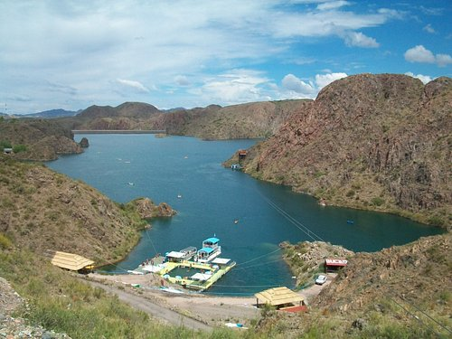

Algunas de las atracciones que representan nuestro deparmento
Cañon del atuel

En el Cañón del Atuel hay una combinación perfecta de paisajes imponentes, actividades náuticas y aventura. Los rápidos del río Atuel son uno de los principales destinos para hacer rafting, kayak y cool river, y en los embalses cercanos, bici, escalada, rappel, canopy y tirolesa. Se puede visitar todo el año.
Laberinto de Borges
Se encuentra a solo 20 minutos de nuestra ciudad. Una obra de arte que encierra en sí misma simbología, nos invita a recorrer los extensos senderos y disfrutar su vista en altura desde la torre de observación erigida a 22 metros. El laberinto se enmarca en un parque gigante, rodeado de viñedos, acequias, y un frondoso bosque.
Embalse los reyunos
A 35 kilómetros de San Rafael, la presa Los Reyunos ofrece un hermoso lago con actividades como pesca, paseos en bote, cabalgatas y deportes acuáticos.A 11 kilómetros se encuentra el Club Náutico Los Reyunos, rodeado de casas blancas y ofrece deportes acuáticos, restaurantes y diversas opciones de alojamiento, con paisajes de montaña y paredes rocosas que bordean aguas tranquilas.
Plaza San Martin
En el centro de esta pintoresca Plaza, esta el Monumento ecuestre del General San Martin. Es circuito cultural y turístico, también un lugar de encuentro de los vecinos de San Rafael. Tiene fuentes de agua, luminarias antiguas y modernas, reloj de sol, bancos, arboles tallados con figuras, esculturas, amplias calles, muy linda y cuidada forestación.
Parque de los niños
En el corazón del Parque Hipólito Yrigoyen y enmarcado por Plaza Francia se encuentra el Parque de los Niños, un sitio público dedicado a los mas pequeños.Con una gran cantidad de juegos lúdicos, inclusivos y adaptados.